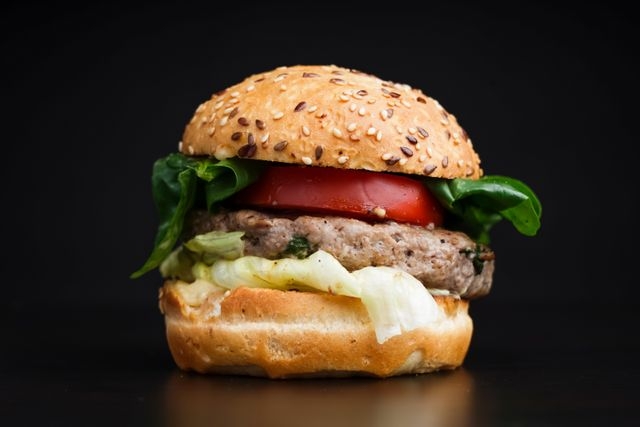

Home
Hamburger

Description
A classic juicy hamburger made with a seasoned beef patty, fresh vegetables, cheese, and a soft toasted bun.
Ingredients
- 500 g ground beef
- 4 hamburger buns
- 4 slices of cheese
- 1 small onion, sliced
- 1 tomato, sliced
- 4 lettuce leaves
- 4 tbsp mayonnaise
- 2 tbsp ketchup
- 1 tbsp mustard
- 1 tsp salt
- ½ tsp black pepper
- 1 tbsp cooking oil
Steps
- Divide the ground beef into four equal portions.
- Shape each portion into a patty slightly wider than the hamburger buns.
- Season both sides of the patties with salt and black pepper.
- Heat a skillet or grill over medium-high heat and add the cooking oil.
- Cook the beef patties for about 4–5 minutes on one side.
- Flip the patties and cook for another 3–4 minutes, or until cooked to your preferred doneness.
- Place a slice of cheese on each patty during the final minute of cooking and allow it to melt.
- Toast the hamburger buns cut-side down in the same pan or on the grill until lightly golden.
- Spread mayonnaise, ketchup, and mustard on the buns, then layer the lettuce, tomato, onion, and cooked beef patty.
- Place the top bun over the fillings, gently press the hamburger together, and serve immediately.